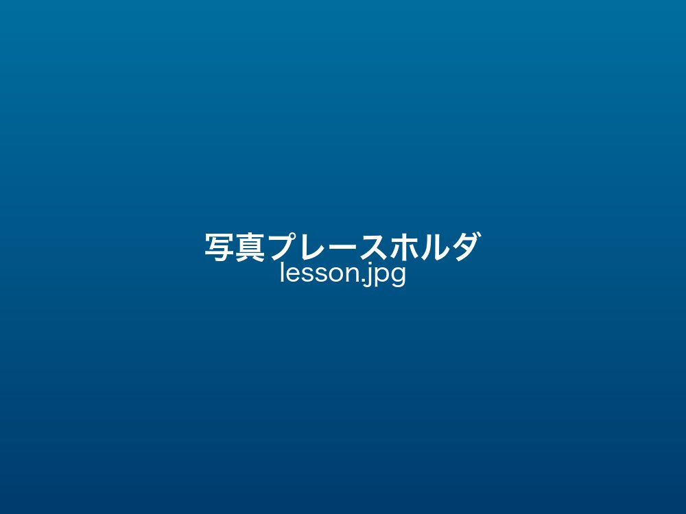
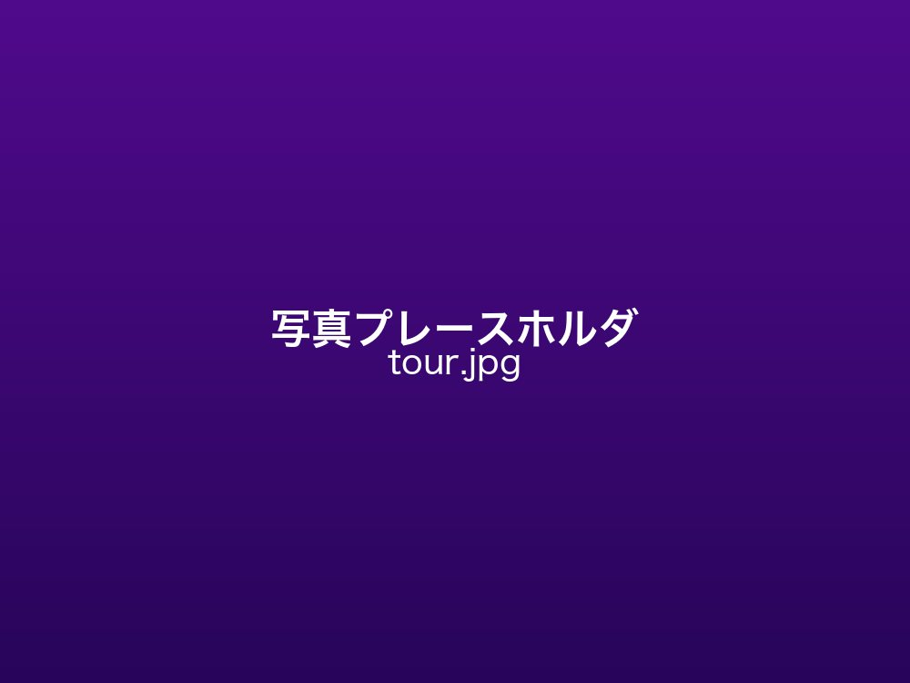
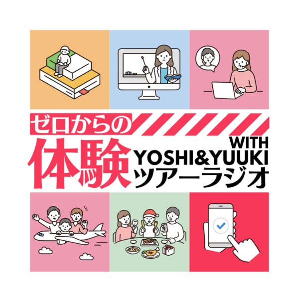
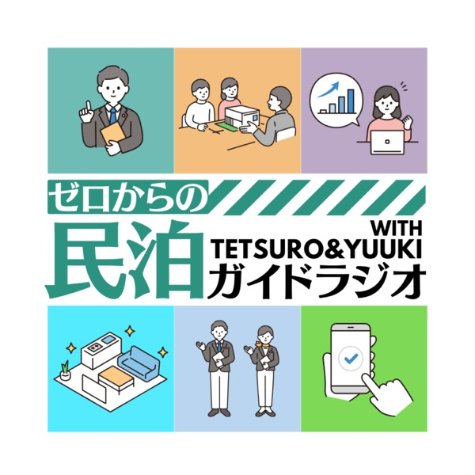
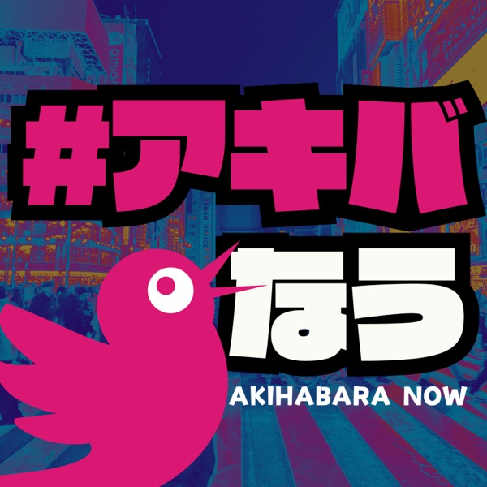
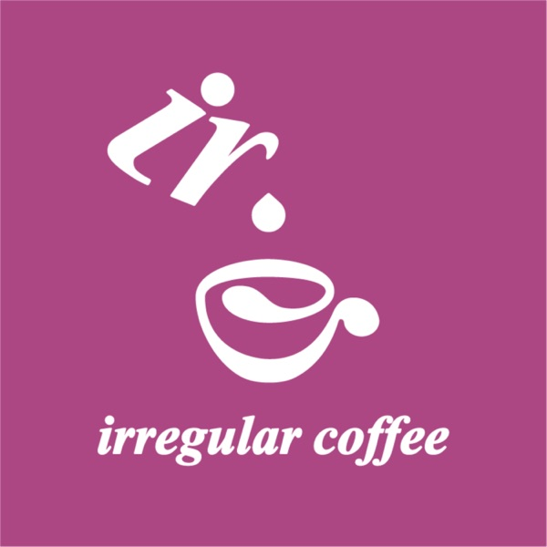
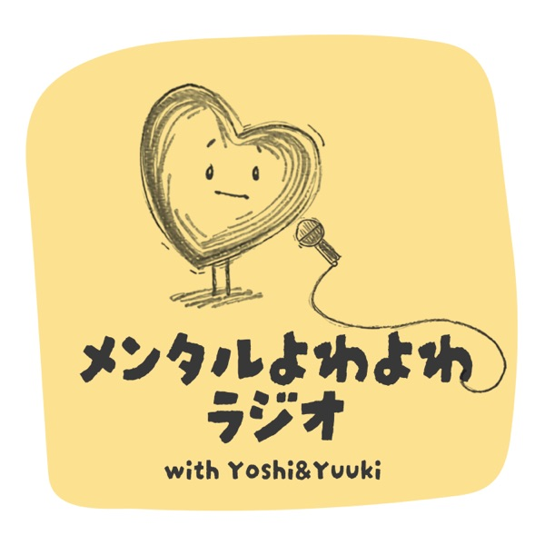
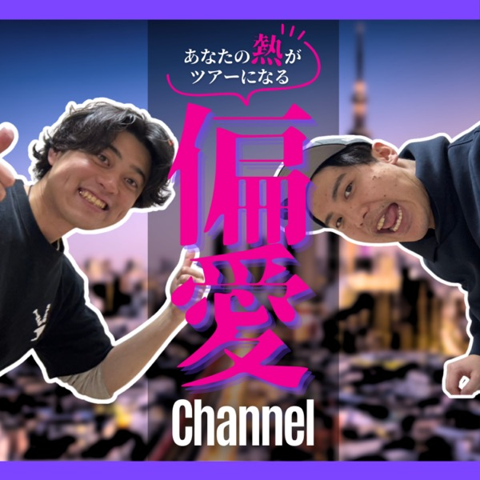

10番組+
ポッドキャスト
500話+
配信エピソード
2,091回+
日本語レッスン実施
2,000人+
訪日ゲストをガイド
SELF INTRO
自己紹介動画
LESSON & TOUR
レッスン・ツアー

JAPANESE LESSON
オタク向け日本語レッスン
アニメ・マンガで「好き」から学ぶ日本語レッスン。文法や会話だけでなく、興味を引く内容がウリ。初心者〜上級・どんな年齢の方も大歓迎！自社サイト・各オンラインで累計2,091回以上の実績（italki講師ランキングTop1%・生徒437名）。

AKIBA TOUR
秋葉原アニメツアー
東京・秋葉原で訪日外国人を2,000人以上ガイドしたオタクによるツアー。今まで知らなかったアキバのディープな魅力を、英語対応でご案内します。
PODCAST
配信中のポッドキャスト
10番組以上・500話以上を配信中。旅・アキバ・珈琲・メンタル・地域まで幅広く展開中！（一部を掲載）

ゼロからの体験ツアーガイドラジオ
「ゼロからでも始められる」体験ツアーの始め方を発信。全128話。
聴く →

ゼロからの民泊ガイドラジオ｜みんらじ
民泊の法律・物件・集客を基礎から解説。全139話。
聴く →

アキバなう
ミスター秋葉原ササキチ×ユウキがアキバのイマを発信。
聴く →

イレギュラーコーヒー
珈琲好きのための番組。全101話。
聴く →

メンタルよわよわラジオ
うつ・休職・復職を経験したITエンジニアの体験談。
聴く →

偏愛Channel
あなたの「偏愛」をコンテンツにする推し活応援番組。
聴く →
厚木トーク｜厚木のしゃべり場
厚木生まれ5児の父ヤギ×ユウキのゆるトーク。全104話。
聴く →
PROFILE
プロフィール
埼玉・坂戸市出身。住まいを固定しない多拠点生活（アドレスホッパー）をしながら活動しています。
肩書き
得意なこと
ちょっと苦手（正直に）
趣味・興味
出身・活動エリア
CONTACT
お問い合わせ
レッスン・ツアー・取材・登壇・コラボのご相談はこちらから。
お問い合わせフォームを開く →
フォームが開かない場合は メールで直接 どうぞ
LINKS
各種リンク